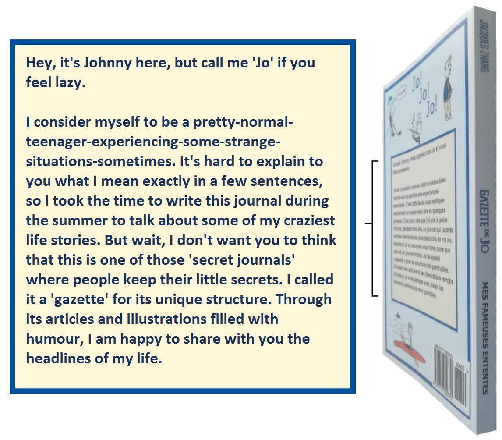

Hey, it's Johnny here, but call me 'Jo' if you feel lazy.
I consider myself to be a pretty-normal-teenager-experiencing-some-strange-situations-sometimes. It's hard to explain to you what I mean exactly in a few sentences, so I took the time to write this journal during the summer to talk about some of my craziest life stories. But wait, I don't want you to think that this is one of those 'secret journals' where people keep their little secrets. I called it a 'gazette' for its unique structure. Through its articles and illustrations filled with humour, I am happy to share with you the headlines of my life.
